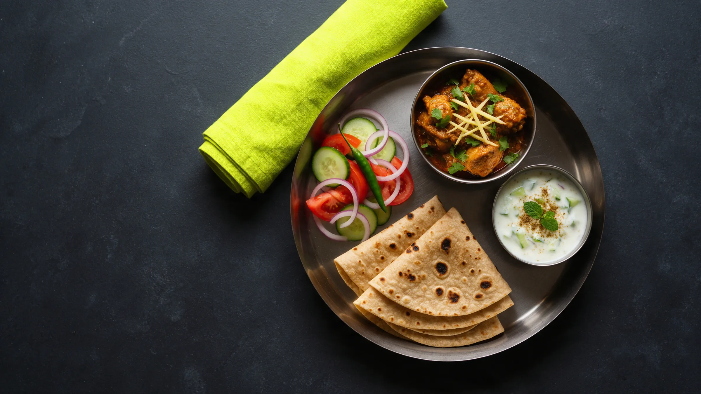
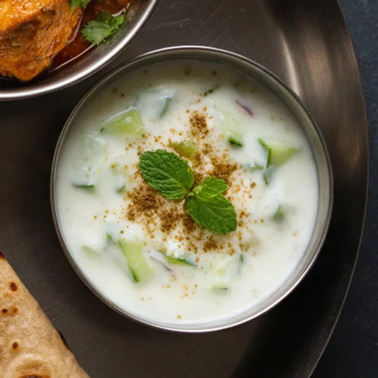
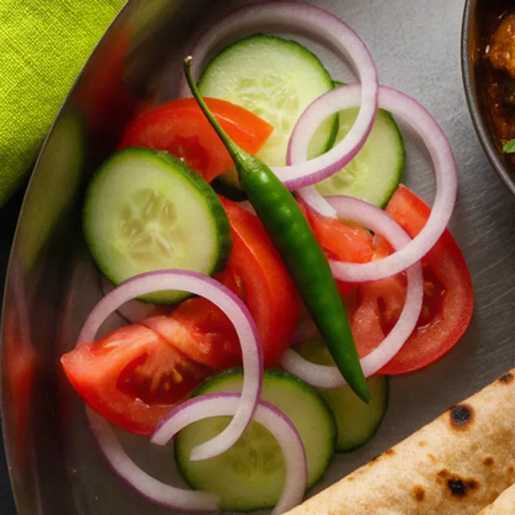

Chicken karahi
- Hissa
- 1 katori
- Note
- The one to measure

Snap your plate. Hissa tells you your portion in roti and katori. Like a friend at the dastarkhwan, not a diet app.
Your kitchen counts in roti and katori.
Not grams. Not points. Not a score to beat.
Over budget? A lighter plate and a gentle word.
Your hissa is your share.
Sample scan. Portions are estimates.
Built for desi home cooking first. Hissa reads the plate and answers in the measures your kitchen already uses.


Pair with a friend, a sibling, a spouse. You only see that they logged, never what they ate. A nudge when they forget, no judgement when they do.
Bring your buddy